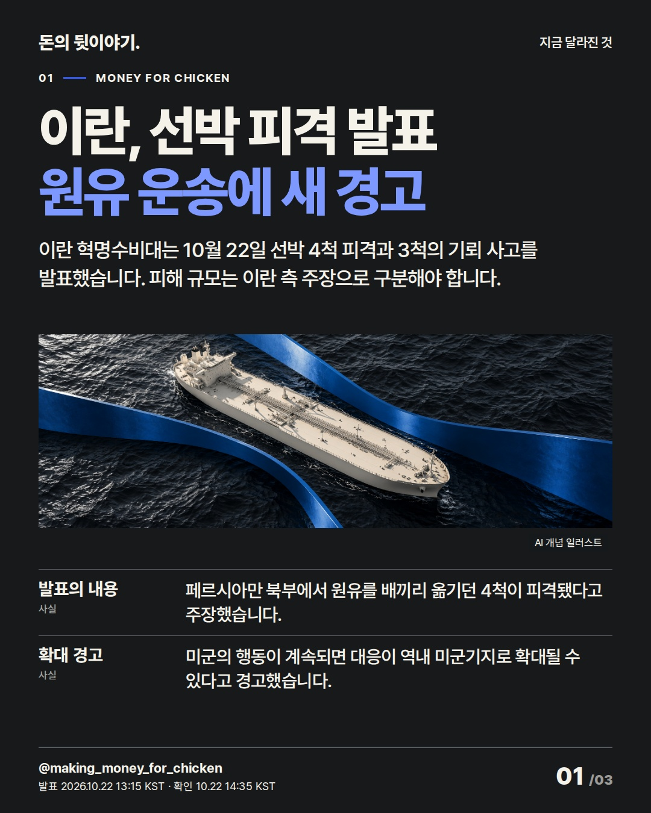
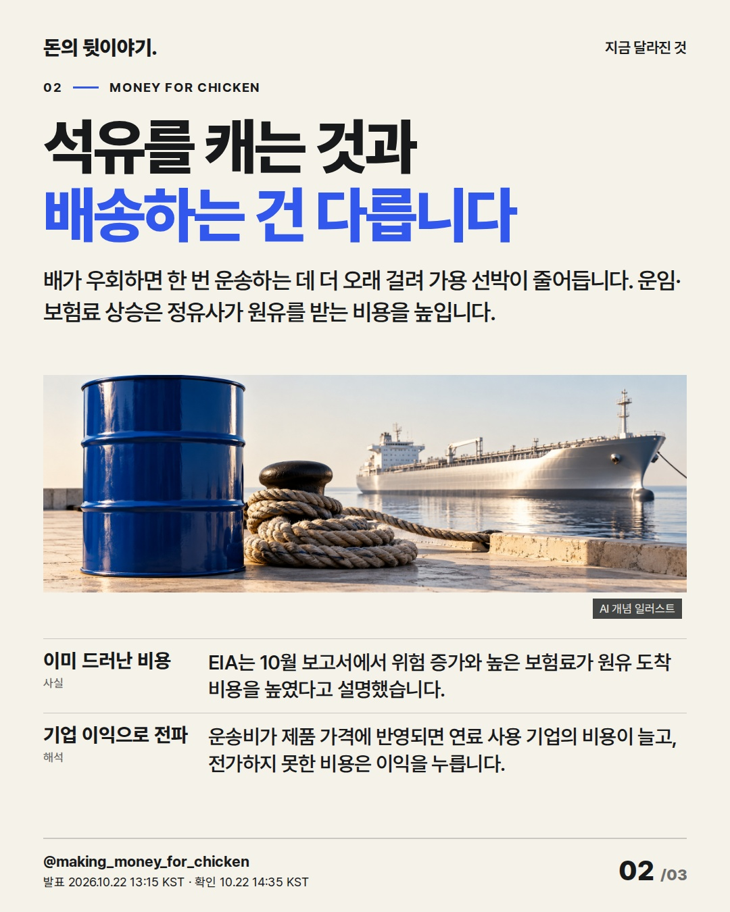
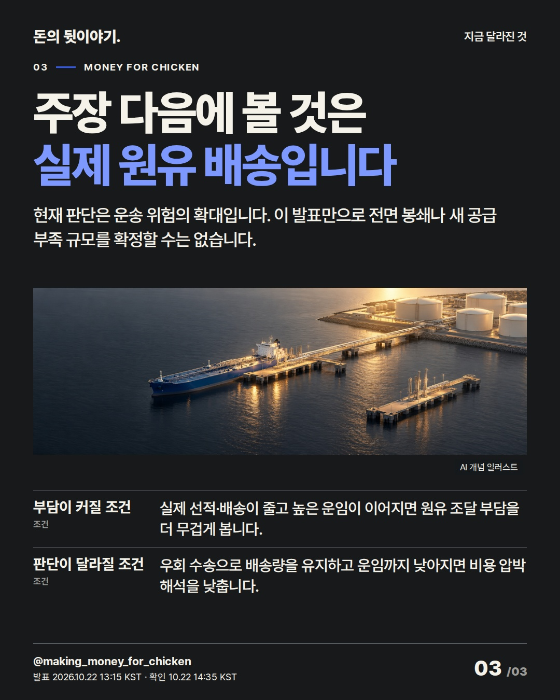

이란의 새 선박 피격 발표는 원유를 안전하게 옮기는 비용을 다시 묻습니다. 피해 주장과 실제 배송 차질을 구분해야 기업의 비용 부담도 제대로 읽을 수 있습니다. #원유 #호르무즈 #시장뉴스

이란 혁명수비대는 10월 22일 선박 4척 피격과 3척의 기뢰 사고를 발표했습니다. 피해 규모는 이란 측 주장으로 구분해야 합니다.
AI 생성 개념 일러스트 · 실제 현장이나 공식 제품 사진이 아닙니다.

배가 우회하면 한 번 운송하는 데 더 오래 걸려 가용 선박이 줄어듭니다. 운임·보험료 상승은 정유사가 원유를 받는 비용을 높입니다.
AI 생성 개념 일러스트 · 실제 현장이나 공식 제품 사진이 아닙니다.

현재 판단은 운송 위험의 확대입니다. 이 발표만으로 전면 봉쇄나 새 공급 부족 규모를 확정할 수는 없습니다.
AI 생성 개념 일러스트 · 실제 현장이나 공식 제품 사진이 아닙니다.
{
"improvement": "핵심은 피격 주장→운송 위험→실제 배송 비용입니다. 한은·인도네시아·서버·GM·관세 최근 5편의 원고와 전체 카드를 읽고, 2장에 우회 시간→가용 선박→도착 비용의 빠진 연결을 보강했습니다.",
"reason": "인도네시아 마지막 장은 이유가 짧고 GM은 숫자 사이의 주주 의미가 부족했습니다. 이번에는 1장의 공식 주장과 2장의 EIA 배경을 구분해, 새 피해가 확인됐거나 당일 비용이 측정된 것처럼 쓰지 않았습니다.",
"application": "제목 후보 '이란, 선박 피격 발표 / 원유 운송에 새 경고', '원유는 있어도 배송이 비싸다', '선박 7척 주장, 공급량은 아직 미확인' 중 새 발표의 주체와 쟁점을 앞세운 첫 안을 택했습니다. 2장 본문에 배송 원리, 둘째 항목에 기업 이익, 3장에 실제 수송·운임 조건을 배치했습니다.",
"avoided_repetition": "한은의 이자·물가 확산과 구분해 해상 물류의 위험을 다뤘습니다. 피해 선박 이름·국적·사상자·공급 감소량·미확인 실시간 유가와 수혜주 나열은 버렸습니다. 계단·금고·갈림길을 재사용하지 않고 항로·계류·접안의 다른 구도를 썼습니다. 다음 보완은 독립 피해 확인과 실제 배송 자료입니다."
}투자 참고용 · 매수·매도 권유 아님.